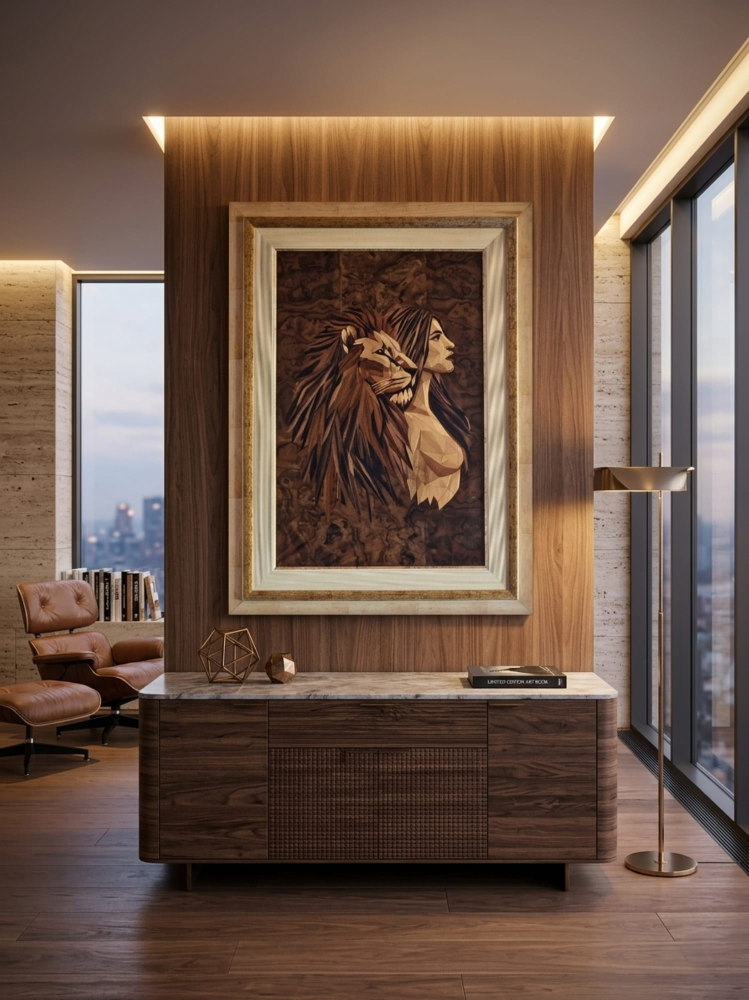

Un retrato
a medida,
cortado a mano en madera
El retrato de un ser querido, recreado íntegramente a mano con chapa de madera natural — una obra que ninguna máquina puede reproducir y que nadie más poseerá jamás.
Por encargo privado · Su vista previa en 24 horas

Vea su retrato antes de decidir — cada encargo empieza con una vista previa privada, preparada en 24 horas.
De la fotografía a la reliquia familiar
Envíe una foto
Envíe la fotografía que desea ver recreada.
Vista previa privada
Reciba una vista previa poligonal en 24 horas.
Apruebe y confirme
Apruebe el concepto y reserve su turno con un anticipo.
Realizado y entregado
Vea cómo toma forma y recíbalo en cualquier lugar del mundo.


El artista con un visitante junto a Black Woman — World Art Dubai, 2024
Expuesto en Dubái y en la Toscana

World Art DubaiDubai World Trade Centre, marzo de 2024

GesùPala Todisco, San Giuliano Terme

Reconocimiento municipalComune di San Giuliano Terme
- Finalidad
- Mostrar que cada obra está firmada, numerada y registrada
- Recomendado
- 4:5 · 1200×1500px
- Estado
- Fotografía pendiente
Certificado de autenticidadFirmado y numerado, con cada obra
Cada retrato se presupuesta de forma personal
Tres formatos — Íntimo, Signature y Obra maestra —, cada uno presupuestado de forma privada, según el nivel de detalle que requiera su retrato.
Descubrir los tres formatospor retrato
por encargo
en nuestro taller
La colección

¿Busca obras para un proyecto?
Presupuestos por proyecto y encargos a medida para interioristas, arquitectos y hostelería — obras dimensionadas y enmarcadas para el espacio.
Descubrir los servicios para profesionales
La madera no es
solo un material
«A través del minucioso oficio de la marquetería, transformo piezas sueltas de chapa de madera en obras de arte llenas de detalle — una danza lenta y cuidadosa entre la precisión y la creatividad.»
Leer la historia completa →Su historia, en madera
Cada retrato empieza con una fotografía — y se convierte en algo que solo usted poseerá.
Empezar su retrato